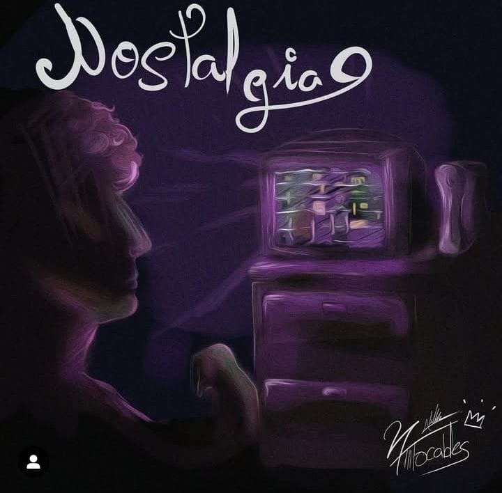
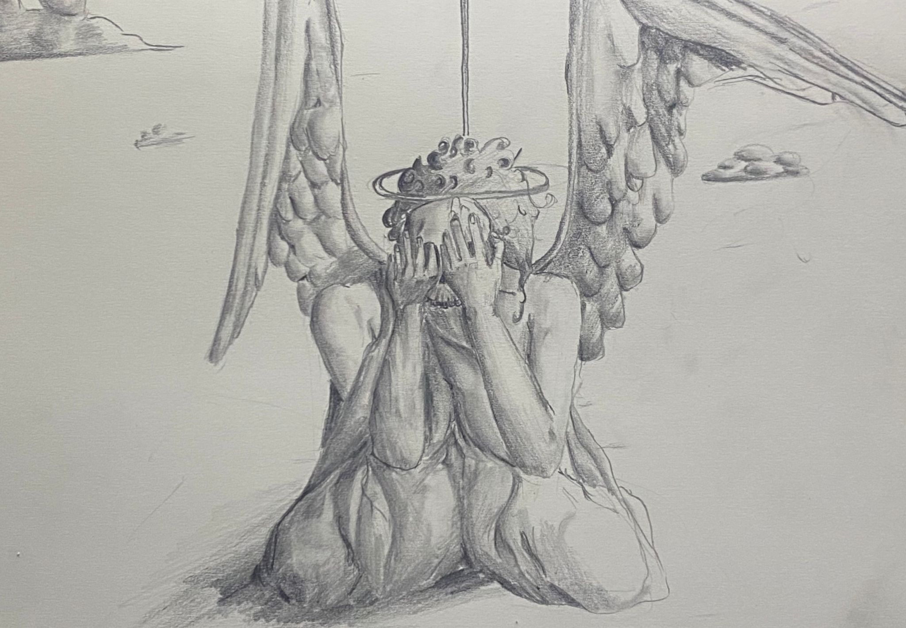
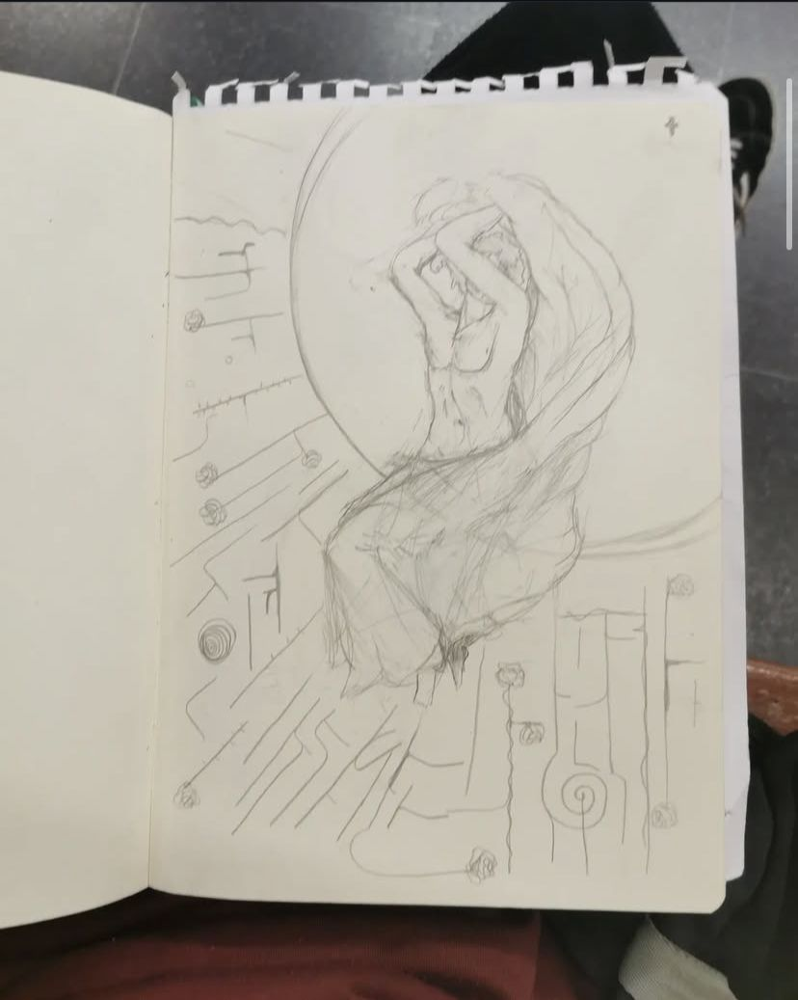

Acerca de mi
Foto del Artista

Alexander Carrasco Ramirez, un chico de 20 años, que ama el arte clasico y odia hacer portadas para artisticos de musica
Sus publicaciones
Links directos a su publicaciones
La Publicaciones
Portada de Nostalgia del cantante Ángel27, Nov 25, 2024
La ultima cancion del chico de 27
La ultima portada, que tuvo un trabajo enorme para terminar a tiempo. Es sobre un chico con pelo rizado que esta jugando a la XBOXPS4 U.
El Rubius
Una recreacion del Rubius, Ene 25, 2021
El Rubius interpretado por el artista Alex05
Una recreacion del Rubius, que por fan, quizo darle el amor que se merece
Arte de la mano
La mujer pensando en el infinito, Ene 12, 2021

Mujer (aunque sea gay) interpretado por Alex05
Una mujer triste camina con la mirada perdida, como si el peso de sus pensamientos la agotara. Su rostro refleja melancolía y su sonrisa es apenas un esfuerzo. En su silencio se ocultan emociones no expresadas, y aunque la tristeza la acompaña, su fortaleza sigue presente, como una flor que sobrevive en la oscuridad.
El sentimiento devastado
La mujer pensando en el infinito, Febre 11, 2025
El sentimiento de soledad cuando ves a otro pajaro volar cerca del nido de la persona que amas, sacado de la loca mente de Alex05
El sentimiento de soledad te embarga al ver a otro pájaro volar cerca del nido de la persona que amas, como un recordatorio de lo que te falta. Ese pájaro, libre y confiado, parece encontrar el lugar que tú deseas, mientras tú te quedas atrapado en la quietud, mirando desde lejos. La tristeza se mezcla con la nostalgia, al sentir que quizás no hay espacio para ti en ese cielo compartido. Es un vacío profundo, al ver cómo el amor se aleja, mientras tú te preguntas qué habría pasado si las circunstancias hubieran sido diferentes.
Las dos mentirosas
El chulo que mira par cielo, Febre 11, 2025
Pajaro
Un ángel triste camina con la mirada perdida, como si el peso de sus alas y sus pensamientos lo agotaran. Su rostro refleja melancolía, y su sonrisa es apenas un destello tenue en medio de la tormenta interna. En su silencio se esconden emociones no expresadas, y aunque la tristeza lo envuelve, su fortaleza sigue presente, como una estrella que brilla débilmente en la vastedad del cielo oscuro. A pesar de la carga que lleva en su corazón, su presencia sigue siendo una muestra de resistencia y serenidad ante el dolor, como si estuviera destinado a sanar, aunque nunca pudiera sanar completamente.